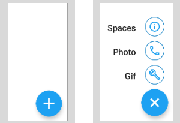

Jetpack Compose: Multi-Button Fab
2nd September 2022
Fab buttons are an extremely common piece of furniture within the household of any Android application these days. Ones which show multiple buttons at once are more common; think Twitter or MyFitnessPal.
I'm making a little Twitter clone and the first part I am tackling is the mult-button Fab. The full code for that can be found here though I don't guarantee it will be as below.
Going to walk through making the below multi-button Fab in this post.


class CounterViewModel : ViewModel() {
var count = 0
fun getIncrementedCount(): Int{
this.count ++
return this.count
}
}
Aliquam eget velit vitae odio elementum porttitor sed nec diam. Fusce a lacus suscipit, feugiat mauris in, auctor augue. Quisque at metus erat. Nam placerat nisl vel ante efficitur efficitur. Suspendisse ornare turpis non consequat tempus. Proin nibh eros, aliquet quis dui nec, facilisis facilisis nisi. Donec eu faucibus metus. Donec hendrerit scelerisque tempor. Etiam eu aliquam nibh, eu posuere turpis. Class aptent taciti sociosqu ad litora torquent per conubia nostra, per inceptos himenaeos. Aenean dignissim orci mi, a ullamcorper quam commodo eget. Quisque sagittis odio sit amet tincidunt ornare.